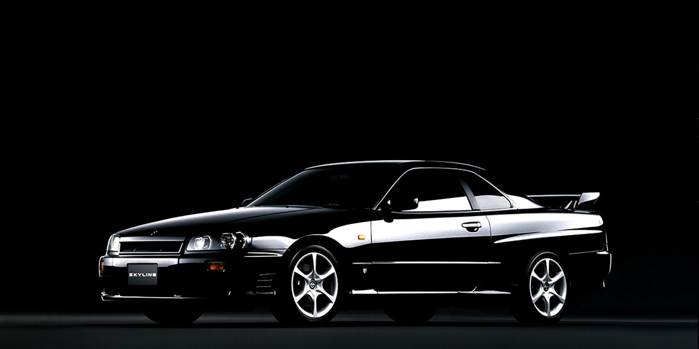
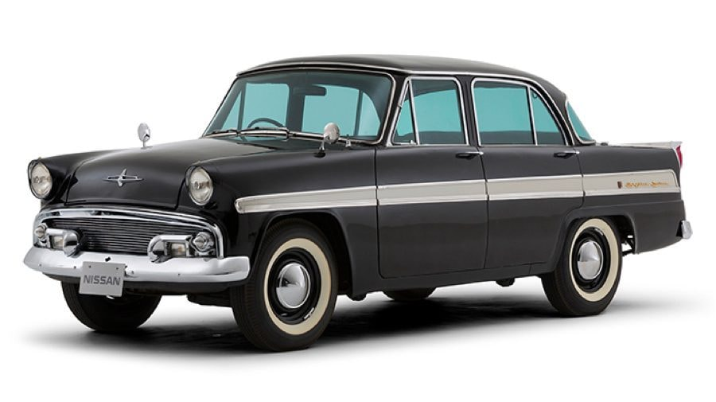
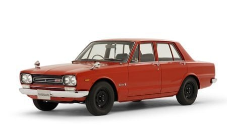
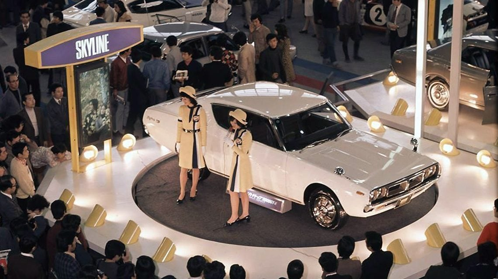
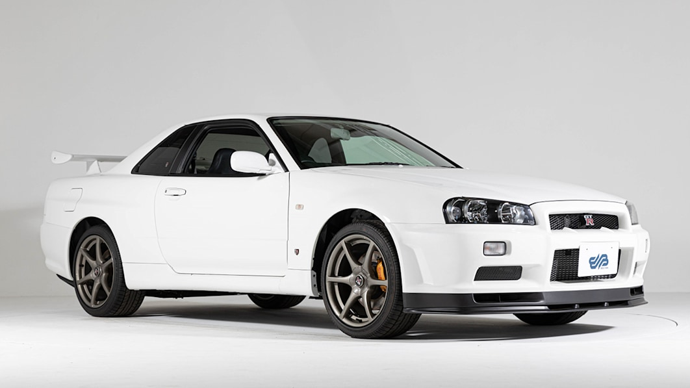
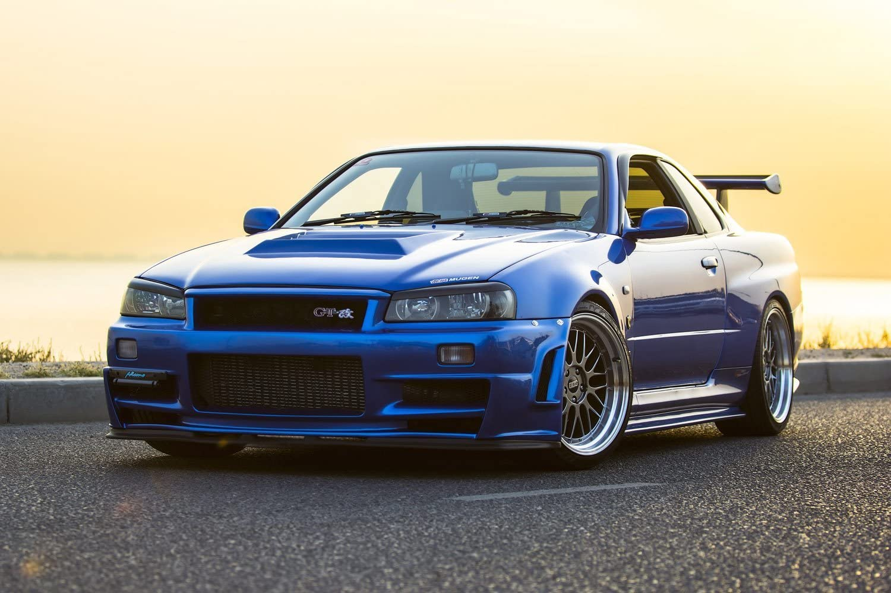
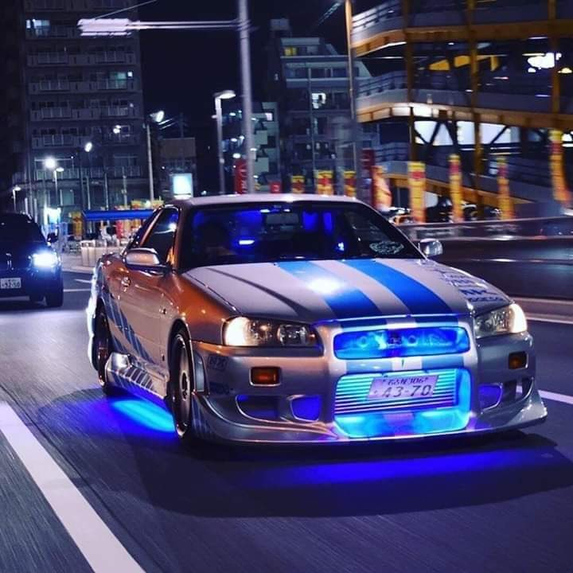

Nissan Skyline GT-R
First introduced in 1957, the legendary Skyline was originally built by Japan's Prince Motor Company. It lasted from 1957 until 1966, when Nissan merged with Prince. With humble origins as a modest 4-door luxury car, the Skyline evolved into a performance sportscar. Today the Skyline is most recognized as the influential predecessor to the modern GT-R (Grand Turismo Racing).

First Skyline
This Skyline was available as either a four-door sedan or a five-door station wagon. It wasn't until 1964 that the first racing GT Skyline was introduced, under the Prince Motors flag. This marked the Skyline's evolution from sedan to race car.

First Nissan Skyline
In 1969, the first performance Nissan Skyline GT-R was introduced at the Tokyo Motor Show. It was still a sedan, but it now boasted an inline six engine and (impressive for the day). The first generation Nissan Skyline was available from 1969-1972.


Nissan Skyline GTR R34 - My Favorite Skyline
Introduced in 1998, The R34 Skyline GT-R was available from 1998 to 2002. A technologically advanced display unit set this model apart, while it's engine produced impressive horsepower. The shorter wheelbase and its streamlined body helped it achieve a higher performance than its predecessors.


Why is the R34 so Popular?
The r34 is well known due to the Fast and Furious franchise, which was Paul's Walker signature car. This helped bring the status of the car to a whole new level in the western audience.
A video of it's first appearnce in 2 Fast 2 Furious.
